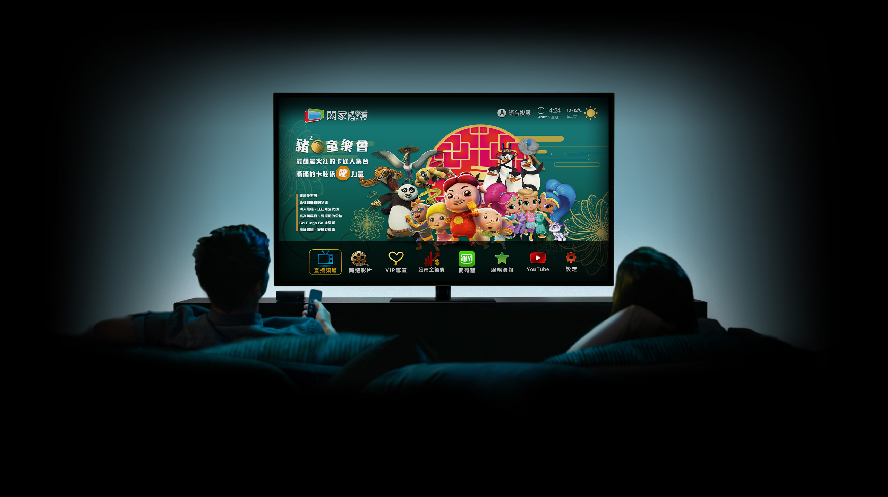
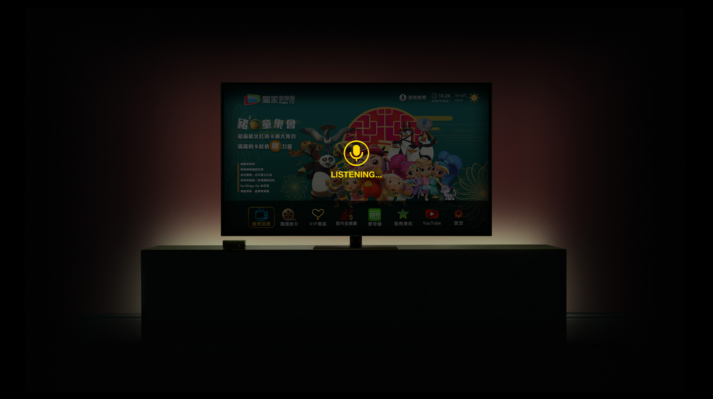

01 — TV UX & Cross-device Product Design · 1 Year

FainTV
Loading experience
FainTV is a Taiwanese TV streaming service. Its core audience watches on a shared living-room screen — many are elderly users who rely on a remote control as their primary input device.
Remote-control text input is slow and exhausting — especially for elderly users trying to search for content or log in.
A voice assistant already existed but was limited to search only — it couldn't help with registration, subscription, or shopping, where users needed it most.
Checkout flows required entering personal details, addresses, and invoice information via D-pad, leading to high drop-off among elderly users.
TV information architecture and interaction design
Voice search and T-commerce experience on TV
Cross-device task allocation and TV ↔ Mobile handoff design
User research and interviews (50+ participants)
Mobile checkout — conceptual, to validate handoff strategy
Web account management — future direction
In usability testing, redesigning FainTV's login flow increased task completion among elderly users from 30% to 80% — validating a voice-first, lower-input direction on TV.

Redesign FainTV so that TV does what it's best at — browsing, voice search, and confirming decisions — and mobile handles the rest.
The problem isn't the form — it's that the form is on the wrong device.
Interviews with 50+ users confirmed that registration, payment, and invoice steps caused the most drop-off on TV.
ResearchSplit tasks into TV-native vs. not. Core hypothesis: TV for deciding, mobile for filling and paying.
SynthesisDesigned TV voice search and T-commerce. Proposed "start on TV, finish on mobile" for subscription and checkout.
DesignVoice search was well-received but long form-based steps still caused friction — validating the cross-device solution.
TestingUsers loved using voice for content discovery, but still got stuck whenever the TV asked them to type. This confirmed that input friction was a device problem, not a user problem.
Designing for elderly users means choosing the right device for each moment — based on input effort, context, and who might be helping — not cramming everything into one interface.
Low-input, high-immersion
Browse, watch, and confirm — no typing required
Designed and shippedHigh-input, personal, on-hand
Type, pay, verify — familiar touchscreen input
Conceptual — to validate handoffManagement & long-term records
Caregivers, history, subscription control
Future directionWhat belongs on TV — what moves to mobile — what shifts to web
| Task | TV | Mobile | Web |
|---|---|---|---|
| Discovery & viewing | |||
| Browse content | Primary | — | — |
| Voice search | Primary | — | — |
| Discover product during broadcast | Primary | — | — |
| Confirm "I want this" | Primary | Supported | — |
| Account & checkout | |||
| Login / identity verification | — | Primary | Supported |
| Enter address & contact info | — | Primary | Supported |
| Payment & invoice details | — | Primary | Supported |
| Account management | |||
| View order history | — | Supported | Primary |
| Manage subscription | — | Supported | Primary |
| Caregiver / family assistance | — | Supported | Primary |
Why "confirm purchase" stays on TV
The decision moment belongs on the engaged screen. Moving intent to mobile mid-viewing breaks flow for elderly users.
Why login & payment leave the TV
SMS codes, passwords, card numbers — all fight against a 10-foot, D-pad-only environment. Highest drop-off in testing.
Why caregiver tasks live on web
Family members need full-screen management tools, not an elderly-optimised TV interface. Separating concerns keeps both clean.
"I don't design screens — I design which screen each task belongs on."
Safe-area padding, large type (min 36px) and high-contrast focus rings. All content navigable with a D-pad only.
65% of elderly users struggled with the on-screen keyboard. Voice reduces a 20-step search into just 2 steps.
A single button on the remote — no menu navigation needed
"Show me dramas with Chen Bo-lin" or simply "news"
No intermediate screens — users land on results immediately


Voice wasn't just a convenience feature — it was the bridge between the TV and the rest of the cross-device system. Without it, elderly users had no reliable way to initiate a task on TV.
Elderly users could discover products on TV — but many abandoned the flow as soon as checkout began. The remote turned a 2-minute task into a 12–15 minute ordeal.
Average time: 12–15 minutes
Most users under 60 took under 3 minutes on mobile for the same flow.
Most abandoned at credit card field
16 digits via D-pad — the single biggest drop-off point across all sessions.
"I just asked my daughter to do it"
A recurring quote. Task completion depended on family availability.
These aren't bad forms. They're forms on the wrong device. The solution isn't to simplify the form — it's to move it to mobile.
TV stays in control of the viewing and decision moment. Mobile takes over the moment high-effort input is required. The handoff is one tap — or one QR scan.
Product appears during broadcast
Lightweight CTA overlay: "Press red to buy"
User confirms intent
Product summary + "Send to my phone"
QR code on TV or push notification to phone
One scan or one tap — the critical device transition
Mobile opens checkout
Member data pre-filled — address and payment only
Complete payment on mobile
Touchscreen input — typically around 2 minutes
TV confirms success
Brief confirmation, then auto-returns to content
Mobile checkout screens are conceptual designs created to illustrate and validate the TV → Mobile handoff strategy. TV keeps the decision moment. Mobile handles all input.
Non-intrusive product prompt during broadcast. One button triggers the handoff.

QR code on screen + push notification sent. The critical device transition.

Pre-filled member data, touchscreen input. Typically around 2 minutes.

Brief confirmation, then auto-returns to viewing. Loop closed on TV.

By moving high-input tasks off the TV and validating a cross-device handoff strategy, the redesign confirmed that device-fit matters more than interface polish.
Task completion among elderly users increased by 50 percentage points — validating a voice-first, lower-input direction on TV.
65%
Initially struggled with text-based search — voice search significantly reduced this friction.
2min
Average checkout on mobile, vs 12–15 minutes via TV D-pad input.
50+
Participants across user research and usability testing sessions.
Designing for elderly users isn't just about making things bigger — it's about eliminating interactions that require long, sustained input. Voice should be a connector across devices, not just a search shortcut inside a single interface.
Design the caregiver experience on web, explore an emergency SOS button integrated into the voice and cross-device system — and test the QR-based handoff with non-smartphone-native elderly users.